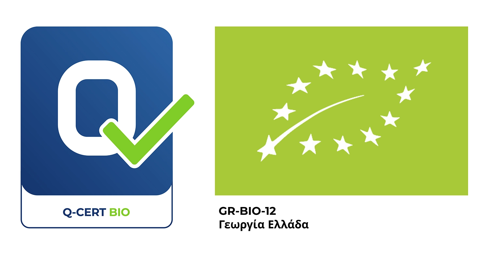

POLYDENDROS
FOODS FOR THE BRAIN
FOODS FOR THE BRAIN
Processing, standardization and wholesale of walnuts and other nuts, with respect to the Greek producer and a strong sense of responsibility towards every single customer


We offer high-quality services using modern machinery that meets all EU standards and directives. We provide nut kernels from both conventional and organic products.
Various options of wholesale or retail packaging are offered, covering all customer needs in terms of product type and quantity.
Internal and external trade of high quality and superior taste products, meeting both commercial and industrial demand.
If you are a Producer, you can trust our company with your organic products for processing and packaging. If you are interested in buying nuts, you are sure to find certified organic Greek nuts of high quality. Our company complies with all EU regulations and directives regarding organic food processing and handling.
